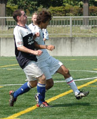
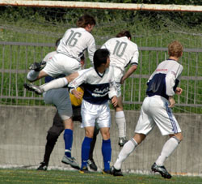
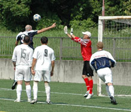

|
OiFuto 2, Sat 9th Sept. What could have been a long, dull and fairly depressing Saturday in Tokyo, was surprisingly converted into a fun filled day of happiness and smiling babies everywhere, thanks to a last minute header by Ozzie stud Beddingfield against BFC, which rescued a draw for a Sala team staring another unfortunate defeat in the face.

Whilst the rest of the Sala boys were losing gallantly to newly promoted Saitama in the opening encounter of the season, the lad Brooke-Smith and I (proudly sporting pithy helmets and muttering about the natives) were on the trail of a leopard on a Rajasthani mountain.
Up and up we trekked, dodging holes dug by sloth bears and ponds full of disgruntled looking water buffalo, struggling with the weight of (the guilt of looking at our tiny Indian guide who was carrying) our extremely heavy packs. Finally we reached the summit, probably around about the same time as Saitama’s third goal went in. I fondly gazed to the east in search of any signal from my adopted homeland and was surprised to see a Thundercat-esque sign in the sky, in the shape of the Sala T-Rex, calling us home. Brookey however, insisted it was a cloud.
Anyway the point is that TML season 4 was in the offing and I couldn’t wait to get back…honest. Barely gave the Leopard another thought…
And back we came…
BFC/Sala games have a tendency to be dicey, cagey affairs with one team usually winning by a single goal and this one seemed little different.
Sala started with Brian and Guido in the centre of defence, and the usual Scottish, Colombian, Kiwi, Japanese midfield foursome of little repute.

After a stellar effort against the JETS last week (marred by some low brow criticism in the press) AJ was replaced by Sid in the sticks.
BFC took little time to stamp their authority all over the first half. Much has been made of their new-look side this season, but it was the more familiar faces of Evans and Jon Day who caused Sala problems. They looked quick and alert upfront and carved out numerous chances which should really have seen BFC take the lead.
This they eventually did, through yet another ropey penalty against Sala. The BFC player had done well to get forward, but got a lucky deflection off Dan to put him through. Dan sprinted back though and made slight contact with the player who looked like he was preparing for that eventuality rather than thinking about shooting. Down he went, penalty given, Sid no chance, 1v0 BFC, and so it stayed until half time.
To be fair, Sala had no reason to complain about the scoreline, considering, a Lenny free-kick aside, they had not a single shot at goal in the whole half. This, despite some lively midfield work from Andres, whose loss of locks has seemingly not diminished his ability.
The second half started at suitably pedestrian pace, given the blinding heat and short-sighted kick off time, but it became clear that Sala were coming back into it.
Toby used some of his magic footwork to create a shooting chance out of nothing and the big BFC keeper did well to palm it past the post.
Minutes later Dhugal had a good header saved and then blasted his rebound, from an improbable angle, off the junction of bar and post.

Despite this, BFC continued to look threatening on the break and despite passing up one golden opportunity, they eventually got a second. Evans and Jon Day combining well again, to set up a straightforward finish past a tired Sala back line.
At 2v0 it looked to be over. The heat seemed to get worse and legs heavier, even the ref had to go off for a spot of water.
Guido’s inspired decision to move Charles to the left wing so as to accommodate Brookey on the right, proved crucial however…
A long ball from Shigeru on the right was missed by the BFC defence thanks to the close attentions of Brookey, who definitely didn’t dive, and left Charles in acres of space to casually volley home. 2v1.
By this point, substitutes were coming on more regularly than the ball was being passed and the game was a bit of a stop-start mess for a while.
Brian and Guido mopped up most of what was thrown there way and Dan, Yusuke and Lenny in particular ran themselves into the ground.
Charles then had another chance. From the far right, Brookey launched a searching cross field ball. Charles picked it up, nutmegged the only defender between him and the goal, ran through and was cruelly denied by the keeper’s (who had his eyes shut) armpit. Giles came desperately close to snapping up the rebound but the BFC defence just got the upper hand.
Minutes later Brookey rounded the keeper, only for his cut back to Toby to be cut out at the near post. Something was coming…
Dhugal replaced Charles on the left wing with minutes to go and was the hero of the hour.
On eighty minutes, with the ref clock watching, Brookey launched one last cross, deep to the back post. It just cleared the head of the last BFC defender and was expertly powered home by Dhugal’s strangely shaped noggin.
Sala rejoiced, play finished a few seconds later, and at least six roaders were recorded at a small yakitori shop in Shimbashi later that evening, which according to Giles isn’t a record, but is still something to be proud of.
All credit to BFC, who were thoroughly sporting thoughout, even with the last minute goal. And to echo Mr. Taw’s thoughts from the YCAC game, it surely won’t be long till Mr. Day celebrates his first win in charge.
Mind you, he’s probably fed up of hearing that now.
Report – Roddy Charles
|